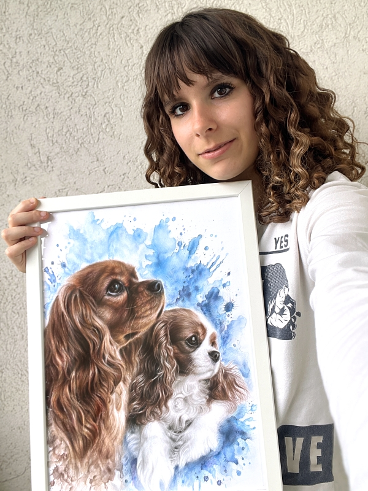

Hi, I’m Andriana
the artist behind Pet Portraits by Ana.
Drawing has been part of my life for as long as I can remember. I didn't grow up in the easiest environment, and being naturally shy and introverted, I often found it difficult to express myself. Art became much more than a hobby—it became my safe place, something that helped me stay grounded and focused when everything else felt uncertain. Over time, drawing became the one skill I could always rely on, and something I've been devoted to improving ever since, making the best of it.
I live in Serbia and currently studying Graphic engineering and design. Along the way, I explored different creative paths, drawing human portraits, various themes and art styles, but I always found myself coming back to animals. There's something so special about them — their pure eyes, soft fur, honesty, gentle nature, character, unique personalities. That's what inspires me the most, and what I try to capture in every piece I create.
I love drawing furry friends in a realistic style, focusing on fine details and vibrant colors that help bring out each pet's personality. I often add a watercolor background for a subtle, special touch. I work slowly and carefully, paying attention to details and pouring my heart into every artwork, until it truly feels complete and perfect. I create all my portraits with high quality materials to ensure your artwork will last for many years to come.
My goal isn't just to create something beautiful to look at. I want each piece to feel deeply personal, something that truly resembles your pet and still feels just as meaningful years from now.
Thank you so much for being here and supporting my work. It truly means more than you know.